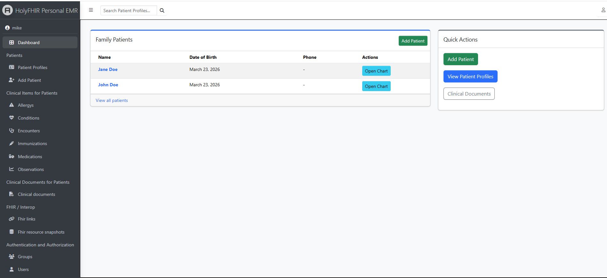

Patient profiles
Keep profiles for yourself or family members with related conditions, allergies, medications, visits, and documents nearby.
Private Windows desktop health records
Keep a local, organized copy of personal and family medical records, documents, medications, visits, observations, and imported FHIR data on your own computer.
HolyFHIR gives you a structured place for health information that usually gets scattered across portals, PDFs, pharmacy records, and memory.
Keep profiles for yourself or family members with related conditions, allergies, medications, visits, and documents nearby.
Bring in supported FHIR JSON, NDJSON, bundles, and requested-record ZIP exports while retaining raw source snapshots.
Organize PDFs, reports, visit summaries, labs, and other records so they are easier to find when appointments come up.
Chart numeric observations such as blood pressure, weight, glucose, vitals, and lab values over time.

The app is designed for people who want a personal reference library for medical information, not a replacement for official records or medical care.
Install the Windows app, create your first user, and keep your password and recovery material somewhere safe.
Enter patients, conditions, allergies, medications, immunizations, visits, documents, vitals, and lab observations.
Review important history, trend measurements, and keep a local reference alongside records from clinicians and portals.
HolyFHIR is early software for personal organization. It is not medical advice, not a certified medical record system, not a medical device, and not intended for diagnosis, treatment, emergencies, clinical decision support, or medication safety checking.
Always verify important health information against official records from your doctor, hospital, pharmacy, lab, or patient portal.
You are responsible for protecting your device, app password, recovery key, backups, database files, and exported records.